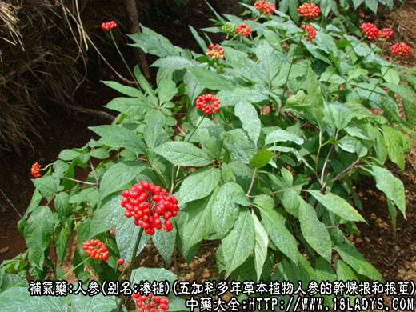
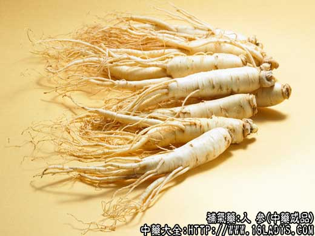
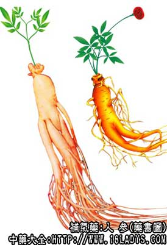

人参为常用中药，始载《神农本草经》，列为上品。原名人葠（读shen第一声）。
概述：人参是我国特产珍贵药材之一。目前市场供应的商品有国产品；野山参和人工栽培之园参；进口人参；有朝鲜红参、白参、日本红参，加拿大、美国的野生洋参和种洋参（西洋参）等品种。
国产山参是山野自生品，生长年限较长，由几十到百余年不等。园参是人工栽培品，由种到收需要六年以上时间，不论是山参或园参均属五加科植物人参，只是因生长环境和生长年限的不同形态有些差异。又因加工方法不同和不同部位，商品分为多种不同的规格。以加工方法分；有糖参、红参、生晒参三大类。以形色部位分；有山参、白人参、白糖参、边条参、红参、全须生晒参，生晒参、白干参、皮尾参。干姜参、直须、弯须、参芦等多种规格。还有按体形和重量划分的多种等级，情况比较复杂，分述如下：
别名：人葠（读shen第一声）、力参、棒槌。
来源：为五加科多年草本植物人参的干燥根和根茎。少数野生，多为栽培品。栽培品中分大马牙（根粗短、生长快、产量高）、二马牙（根稍粗而长）等。
植物形态：本品主根肉质，圆柱形或纺缍形。淡黄色，根状茎较短。茎高30～60厘米。掌状复叶由五片叶组成，轮生于茎顶。第一年只生三小叶，俗名“三花”。第二年生五小叶成为一个完整的叶片，叫“巴掌”。第三年生两个复叶叫“二甲子”。第四年生三个复叶“灯台子”。第五年生四个复叶叫“四枇叶”。第六年生五个复叶叫“五枇叶”。但也有少数生六个复叶叫“六枇叶”，叶片共30枚。到此为止，不在增生。叶片椭圆形或长椭圆形长8～12厘米，宽3～5厘米，先端长渐尖，边缘有小锯齿，上面叶脉上散生少数纲毛，下面无毛，中央一片最大，最外一对较小。叶柄长10余厘米。伞形花序单生于茎项；花小，淡黄绿色，萼边缘有五齿，花冠5瓣、雄蕊5枚；子房下位、2室，花柱2枚，分离。浆果扁球形，成熟时鲜红色。在茎叶的生长形态上马牙茎较粗壮而高，叶形呈宽椭圆形。二马牙茎略细，叶椭圆形。圆膀圆芦、线芦茎细弱、低矮、叶长椭圆形。
产地：野生品分布于我国北纬39～48度线，东经117.5～134度。主产于东北三省长白山区大小兴安岭。人工栽培品，主产于吉林省通化、抚松、辑安、靖宇、桦甸、汪清、安图、敦化、辽宁省的风城、宽甸、恒仁，黑龙江省的宁安、依兰、五常、尚忐等地区。现华北、西北、山东、四川等地均有小型引种试种。
1、山参
性状鉴别：山参因野生于深山密林，土壤较坚硬的环境中，年限较长，受自然环境影响，在山参的各个部位，都形成较特殊的形态，分述如下。
（1）山参芦（根茎）茎秋脱春生，年复一年，茎基残留，缓慢的增长，因生长年久茎芦较其他参芦为长。俗称“雁脖芦”。芦一般可分为三段。顶端第一段为新脱落的茎痕，形如马牙，边缘棱较平齐，中心凹陷，故俗称“芦碗”或“马牙芦”。第二段为近十年间脱落的茎基，芦左右交错层迭而生，芦碗紧密边沿有明显的棱脊，俗称“对花芦”。第三段为远年的茎基脱化而生，不再显芦碗，而呈圆柱形，故名“圆芦”。圆芦上有紧密的环形棱皱。一般认为每一棱皱是生长一年的标记，由此可得出山参的生长年限。还有一种芦细长如线，至上端始变粗呈对花芦形式，俗称“线芦”。无论是马牙芦、对花芦、圆芦、线芦，上面多生有小疙瘩瘤，这也是山参上的特点。
（2）山参艼（附芦而生的不定根）。生长年限较久的山参上多生有参上多生有参艼1～3枚。两枚以上的艼根多为左右互生，山参艼一般均粗短两端尖细，形如枣核或蒜瓣，故有“枣核艼”或蒜瓣艼的名称。艼体垂直向下伸延，这是山参艼的特点。在一般情况下山参主根是横灵体，艼也就是呈枣核蒜瓣形。如果主根顺长艼也就顺长。
（3）山参主根。有横灵体俗称“武形”和顺笨体俗称“文形”的区分。横灵体多呈短横体、疙瘩体或菱角形。顺笨体多呈纺缍形或圆柱形。无论灵体笨体一般均较粗短。主体长4～6厘米，最长不超过10厘米，中部直径约0.5～2.5厘米。主根和芦头基本等长短于芦长，肩下垂，故俗称“溜肩膀”。
（4）山参纹。在主体上端，生有紧密的环形纹。纹深而细，皱纹略显上兜，皱沟黑褐色，俗称“螺旋纹”或“紧兜纹”。有时环纹伸延至中部或下端，俗称“一纹到底”。
（5）山参皮。淡黄白色，紧结光润老而不粗，俗称“皮细似锦”或“细结皮”。
（6）山参腿。（支根）一般为一～二条，最多三条，腿短促，上粗下细，分档处多呈八字形，宽润而不并扰。
（7）山参须。（须根）疏生，清秀而不散乱，须根上生有多数小疙瘩瘤，俗称“珍珠疙瘩皮条须”，生鲜时如初春含芽未发的垂柳嫩条，柔韧顺直。干燥后坚脆易折。
山参气无味甜微苦，嚼之有清香感。
在鉴别山参时老药工有一套顺口溜。说：马牙雁脖芦，下伸枣核芦，身短体横灵，环纹深密生，肩膀圆下垂，皮紧细光润，腿短二三个，分裆八字形，须疏根瘤密，山参特殊形。
山参以横灵体，八字分开，五形全美（芦、艼、根、须相称），皮紧细，纹深。艼帽不超过主根25%者为佳。
2、移山参
本品系采集较小的山参，移植于离居地区较近，适宜于山参生长的由林中经10余年后，再挖出随山参出售，因经过移植，参形略有变异。习惯认为品质不及山参。
（1）移山参芦。芦碗略显长而稀疏，移植后的芦常产生骤然变细或变粗的现象。或不呈对花芦而呈转芦形式。
（2）艼形。多呈顺长体，略向斜旁伸出，有时艼体超过主体。
（3）纹。环纹稀疏凹入较浅，常呈“一纹到底”。
（4）皮。略显虑泡，质粗而不紧结，不光润。
（5）腿。较顺长，分挡并拢不呈八字形。
（6）须。较细嫩，下端分杈较多，根须上小疙瘩瘤较稀疏而小（分叉多的原因是移植时根须常被折断再生时多分杈）。
以上山参和移山参，因加工方法不同，有生晒参。糖参、掐皮参三种规格。
加工方法：
（1）生晒山参。是在挖回山参水子后用白棉线将参面缠成一束，不再经任何特殊加工晒干即生。生晒山参的主要特点是原形、原色，除应具备山参各个部位的特点外，主体上略有纵横抽皱。体略显轻泡。
（2）糖山参。是挖回水参，经过洗刷和用特制的棉线弓子拉净横纹中的泥砂，使全体白净，保留黑色纹痕。再放入开水中浸煮片刻，捞出后用特制的骨针和金属针进行竖横排针，而后放入熬好的浓糖汁中吃糖，第二日取出晒干或烤烘干燥即成。糖山参的主要特点是经过洗刷和吃糖，表皮黄白色，体质较坚重，主体上无纵形抽皱。腿须不经束扎原形不变。
（3）掐皮山参。加工方法略同糖山参。在吃糖后经过蒸烤使皮肉脱离，晒干后，再放温水中浸烫片刻，使表皮回潮变软，然后用特制掐皮刀进行掐皮。掐出一定的纵皱俗称“核桃纹”用针钉、线缠把掐出的纵皱固定下来。同时把参须也缠扎成一束再晒干。干燥后去掉主体上的针线即成。掐皮参的特点略与糖山参相同只是参须用线束扎，主体上的皱纹是经人工掐制，不如天然品自然。
以上三种山参根据体形好环，重量大小等情况分为1～9等。现生晒参，掐皮参以及上挡糖山参均供应出口外销，市场上供应的山参多属低档糖参。
3、白人参
本品系用人工栽培的全形园参加工制表。其加工方法与制作糖山参相同。
性状鉴别：本品呈纺缍形或圆柱形。全长约15～25厘米，中部直径约1.5～3厘米。淡黄白色。芦较短，长约1.5～3.5厘米，有马牙芦一般无圆芦。少数有艼，艼体顺长，斜向旁伸，肩膀圆形下垂。腿2～5条或更多。须根丛生散乱。皮显粗泡，环纹浅而稀疏。腿垂直并拢。须根细脆，小疙瘩微小不太显。质略坚脆，气无味甜微苦。
以全须全芦，表面白色，体充实，不近糖，无浮糖，破疤者佳。
4、白糖参
性状鉴别：本品属于白人参的下档货。凡园参的低档货均可制做，常缺芦、破皮、吃糖较重，表皮上常析出糖结晶粒，余与白人参相同。
5、边条红参
本品系人工栽培，原主产于辽宁省宽甸石柱沟，故又名“石柱参”。本品属于长脖芦品种，生长较缓慢，一般在8～12年才能采挖。挖回鲜参（参水子）洗净泥土掐去细根须，用笼蒸熟后晒干或烘炕干燥即成。
性状鉴别：本品为长条圆柱形。全长约13～20厘米，中部直径约0.8～2厘米。芦长约2.5～4厘米，直径约4～7毫米，黄色略柴质，顶端芦碗稍大凹陷较深，中下端略圆形有节状棱纹。主体红棕色半透明，或略带黄色粗皮，俗称“黄马褂”。肩部有不太明显的环纹。全身有不规则的纵形抽皱。腿二、三条，红棕色。质坚实。断面红棕色，有光泽，显菊花纹。本品特点为三长，即芦长、身长、腿长。气无、味甜微苦。
本品按支苗和重量分等，以市斤为计量单位（传统计法，故未换算成新制），如16边条红参即16支重500g。其余25、35～80支重500g者者即分别定为25、35～80边条红参。80支不足500g者为小边条红参。以体长、坚实、棕红或棕黄色，有光泽，有皮有肉，无黄皮、破疤者为佳。
6、红参
本品系人工栽培品，属于大马牙或二马牙品种，生长较快因而年限略短，一般六年即能采挖。挖回鲜参掐去细腿细须，经过二、三小时蒸煮透熟后晒干或烘干即可。
性状鉴别：本品呈短圆柱形或纺锤形。芦、身、腿较边条红参略短。全长约10～13厘米。芦长1～2厘米，中部直径0.8～2.5厘米。内碴外色气味与边条红参相同。红参以重量为制定等级的计量单位，如二支红参、即是二支重一两（16两制），其余三支、五支。均以此为例。五支以下为小红参，俗称“一把抓”。还有浆性不足的干瘪抽皱黄皮货，称“干姜参”。
以体质坚实，棕红或棕黄色，有皮有肉，无黄皮、破疤者为佳。
7、大力参
选支苗较大的鲜园参，掐去细腿、须根进行蒸煮，但时间短，一般在水开后蒸煮片刻（10分钟左右），使鲜参糊化后立即取出，晒干即成。
性状鉴别：本品体形体与红参相同，唯颜色呈淡黄白色，半透明状，别无差异。以体质坚实，淡黄白色，半透明者为佳。
8、生晒参
本品系人工栽培品，为园参中加工方法最简单的一种。挖回鲜参洗衣净泥土，用硫磺熏蒸后晒干即成。本品有两种规格，掐去细腿，须根的成品称生晒参；保持原形不去腿须的成品名全须生晒参。
性状鉴别：生晒参略与红参形象相同，全须生晒参略与白人参形象相同。唯未经蒸熟或排针吃糖。表皮淡黄色环纹稀疏并有不规则的纵抽皱。体略轻泡。断面略粉质，不透明，显菊花纹。气无，味甘微苦。
全须生晒；以体轻饱满，芦须全，深土黄色，皮老而细，横纹深者佳。
生晒参，以体轻饱满，去净艼须、深土黄色，皮细，无皮疤者为佳。
9、白干参
本品属于生晒参类，挖回鲜园参，掐去细腿、须根，洗净泥沙，用竹刀刮去表皮，用硫磺熏蒸数次，晒干或烘烤干燥即成。
性状鉴别：本品略似生晒参，唯因已刮去表皮，颜色较白净，环纹已不明显，纵皱少，或有或无，质较生晒参略坚实。断面白色，显菊花纹。气无，味甘微苦。以皮细，色白，芦小质充实肥壮者为佳。
10、皮尾参
本品系园参的不定根（参芋）属于生晒参类，呈长条园柱形，上端有茎痕而不带芦，下部不带根须。长约3～6厘米，直径约0.5～1厘米。表皮土黄色，多数带有褐色环纹及不规则的纵形抽皱。质较轻泡。断面白色显菊花心纹。气味与生晒参相同。
11、参须
本品系园参的细枝根和须根的加工品。因加工方法不同，分为生晒参须（白参须）、糖参须、红参须三种。每种又分为混须、直须、弯须三种规格。直须上端直径约3毫米，中、下端渐纤细，长短不一，最长可达20厘米。弯须则弯曲而细乱。混须则细枝根占50%以上，须根占40$以上。白参须色味与生晒参相同，糖参须色味与糖参相同。红参须色味与红参相同。
主要成分：含人参烯、人参奎酮（即人参素）、人参甙、人参宁；此外尚含有人参酸、维生素苦味质，无机盐、粘液、蔗糖、葡萄糖、果糖、麦芽糖、胆硷等。
药理作用：用滋补强壮作用，能大补元气、宁神益智、健脾、益气、生津。其原理为：
（1）兴奋神经系统。能缩短神反射的潜伏期，加快神经冲动的传导，增加条件反射的强度，提高分析功能，故参提高工作参力（包括脑力劳动和体力劳动），减轻疲劳。前人认为人参能“开心益智”、“令人不忘”，与此作用相关。另有实验证明，对抑制过程也有一定影响，故参“安神定志”。
（2）兴奋垂体—肾上腺皮质系统。能兴奋肾上腺皮质功能，提高机体对外界不良条件剌激的抵抗力，人参的强壮作用与此有关。
（3）增强性机能。人参有促性腺激素样作用，能促进男女的性腺机能，故能用于治疗性机能衰弱。
（4）强心。能使心脏收缩力加强，其作用特点与强心甙相似。酒精浸液的作用强于水浸液。动物实验证明，小量人参又有使末梢血管收缩，血压轻度上升，但据临床观察，治疗剂量一般对血压影响不大。对心脏者，人参可能通过改善心肌营养代谢而使心功能改善。
（5）降血糖。能降低血糖，并与胰岛素有协同作用。
（6）改善消化吸收和代谢功能，增进食欲，促进蛋白质人合成。对脂肪代谢也有一定影响。人参能抑制动物高胆固醇血症的发生，当已形成高胆固醇血症时，人参能使血胆固醇降低。
（7）抗过敏。人参能减弱由马血清引起的过敏性休克，对过敏性水肿也有显著抑制作用，其原理可能与人参的抗组织胺作用有关。
（8）抗利尿。作用与去氧皮质酮相似，可能是由于使醛固酮分泌增加，从而促进钠潴留而使排尿减少。
此外，初步观察还发现，人参对小鼠艾氏腹水癌的生长有轻度抑制作用；对实验性胃溃疡、实验性心肌炎有一定的治疗和预防作用。
归经：入脾、肺二经。
功能：大补元气，养血生津，宁神益智。
主治：气血虚弱，津液不足，神倦，食少无力，气短喘促，多汗，惊悸善忘，口渴不止，阳痿及一切急慢性病引起的虚脱等。红参与白参效用相同，糖参力较逊。
临床应用：主要用于治疗急性气脱症和慢性虚弱。
（1）大补元气，提高病人的抗病能力，渡过濒危状态，增加进一步抢救的机会。适用于抢救危重病人，特别是由各种原因引起的心血管功能不全，表现脉沉微细伏、肢冷、自汗等气脱亡阳症状的患者。
如属出血不止引起周围循环衰竭，有面白、气少（呼吸速、微弱）、脉微欲绝等症状，可单用人参一味（即独参汤）浓煎取汁服用，以补气固脱（抗休克）。不过这只是一种救急的权宜措施，用以延长生命，争取治疗时间，不能看作是止血的手段，应积极针对出血原因进行处理，以免贻误病情。
如属心功能不全或伴有周围循环衰竭，则须配附子，效力较好，如参附汤。
总的来说，在中西医结合救治休克时，应用人参有其一定价值，有助于稳定血压和逐渐撤用升压药。
（2）用于脾胃虚弱，根据前人经验，人参的主要作用是补俾健胃，故对消化系统疾病（如肝炎、慢性胃炎、溃疡病等）以及其他病因所致的上腹痞满、食欲不振、泄泻、呕吐等脾胃虚弱的症状，人参是治疗的要药，常配伍白术。茯苓，如益气汤（旧名四君子汤），特别适用于病后体虚，脾胃虚弱，消化吸收功能较差的患者，可加速元气恢复。
（3）用于治疗贫血。单纯用补血药治疗效果不好时，配伍人参等补气药可提高疗效。
（4）用于肺肾不足的虚喘，常见于病程较久的慢性气管炎，肺气肿，支乞管哮喘，慢性肺部感染（如肺结核等），以及心脏病等所致的心肺功能不全，每与温肾纳气药如蛤蚧，胡桃，熟附子，五味子等配伍，方如人参定喘汤。
（5）治疗糖尿病，解除热性疾病伤津液所出现的口渴症。用于治疗糖尿病，较适宜用于轻型糖尿病患者，能降低血糖和减少尿糖排出；对中型糖尿病患者，作用主要为减轻口渴和全身衰弱等症状。部分病人血糖降低不够理想，要与滋阴补肾药如熟地黄、杞子、天冬、山萸肉等配伍，效果较好，方如消渴饮。
热性疾病耗伤津液，表现口渴、汗多，短气，可与麦冬、五味子配伍治疗，方如生脉散，此方对治疗休克也有一定作用，据报道，临床试用生脉注射液抢救感染中毒性休克，效果较好。实验证明，生脉注射液对狗急性失血性休克有升压作用。对在位免心有加强收缩力作用，又能使休克动物趋于安静。
（6）治疗神经衰弱。对兴奋型（心肾不交型）患者能安神、止惊悸，消除精神恍惚。常配茯苓、远志、益智仁、酸枣仁等。对抑制型（心脾两虚型）患者能减轻疲劳，提高脑力，常配黄芪，白术、桂圆肉等。对于由植物神经功能紊乱而引起的自汗，可配五味子、白芍、浮小麦、麦冬等。
（7）治疗性机能衰弱，尤其对麻痹型和早泄型阳萎疗效较好。常与巴戟、肉苁蓉、杞子等配伍，方如阳萎汤。
（8）扶正祛邪。常与解表、清热‘攻下等祛邪药同用，适用于外感或温病外邪侵犯而有阳虚的患者。此时邪未清而正已虚，加用人参目的是在清中带补，加强抗病能力，例如阳虚而兼有表证者，可在发汗解表药中加人参（常用党参代），以益气解表，方如参苏饮。
此外，人参还用于治疗牙周病，防治放射，提高视觉的适应能力。
使用注意：风属气盛、身热、脉滑实有力，大小便不通等实热证，忌用人参。具体地说，下列情况均不宜用人参：
（1）肝阳上亢的高血压病者，多服人参后，易引起脑充血甚至脑血管意外。但见证虚寒的高血压病者则可用人参，不过，用量宜少，收缩压超过180毫米汞柱者，无论何类型的高血压病，均不宜服人参；
（2）湿热壅滞所致的浮肿，服人参后往往肿更甚（因有抗利尿作用）。肾功能不全伴有尿少者亦应慎用；
（3）失眠烦躁而属实证者一般不宜用人参，用后睡眠更差；
（4）感冒发热一般不用或慎用人参，以防其助为；必须用时，也只在解表药中酌加少量协助。
（5）有些患者长期服用人参会产生头痛、抢眼、心性、血压升高等症状，但停药后症状可逐渐消失。
（6）服人参防其太热会助炎时，可佐以凉润药如麦冬，天冬，防其影响至气滞不畅时，可佐以川贝，陈皮。又人参习惯上不与藜芦同用。
（7）各种参功力的比较：①吉林参药性较朝鲜参和缓，治阳耗津枯，有虚为虚热的体弱病者较适宜;朝鲜参振阳之力较猛，用于阴耗阳衰的患者，抗休克虚脱的效力胜于吉林参;②边条参，石柱参，红参属吉林参一类，性能较力亦相同，用于滋水，治病后体弱津亏较适宜;③参须较人参（参根）苦寒，补气功力不及人参，只用于治疗一般气弱津虚、虚为上炎的患者，例如治慢性气管炎之热咳，或支气管扩张合并咯血（轻症）可用参须。又治小儿夏季疮疖，每用参须6g，煮瘦猪肉汤饮服。
（8）人参价昂难得，除救治休克，虚脱时必须使用外，一般在处方中应以党参代。
用量：一般0.9～9g、大剂用于30g、视其用途和人参种类而定；
（1）用作补剂，如治疗贫血、中气虚弱和阳虚病者，少量即可，每用吉林参2.4～4.5g或用朝鲜参1.5～3g。
（2）用作强心，如治疗亡津失水、心力衰竭患者，要稍大量，用吉林参9～15g或用朝鲜参3～6g。
（3）用作救急，如治疗大出血或元气虚脱、垂危患者，重用吉林参15～30g或朝鲜参15～24g。
至于平素体虚，要服参以调补者，可5～7日报一次，每次吉林参4.5～9g炖服（或用党参15g），在秋冬季天凉时服较好。夏日炎热，服后易助火，最好不用。又衰弱情况改善后应停用。
处方举例：
（1）独参汤（《景岳全书》）；吉林参30g急煎频服。
（2）参附汤（《世医得效力》）；见附子项下。
（3）人参定喘汤：吉林参6g（另炖）熟地15g，熟附片9g，胡桃肉12g，蛤蚧1对，五味子6g，水煎服。
（4）消渴饮：吉林参6g（另炖），熟地18g，杞子12g，天冬9g，山萸肉9g，泽泻12水煎服。
（5）阳萎汤：吉林参6g（另炖）巴戟9g，肉苁蓉15g，杞子9g，水煎服。
（6）参苏饮（《局方》）：吉林参3g（另炖），苏叶9g，茯苓9g，葛根9g，前胡3g，姜半夏3g，陈皮3g，枳壳3g，桔梗1.5g，木香1.5g（后下）甘草1.5g，生姜5片，大枣1枚，水煎，热服取汗。
12、参芦
本品系成品人参作饮片出售前，掰下来的芦茎。有山参芦，也有圆参芦。又分为生晒参芦、糖参芦、红参芦几种规格。味苦，性微温。有催吐作用，凡痰饮滞于胸膈，必须涌吐而病人体质又较虚弱，不能耐受其他涌吐药时，可用人参芦，因本品在宣泄中略带补性，不致因涌吐而耗散元气。常用量3～6g研末用水调服，或加竹沥和服。
13、人参叶
广东用竹节人参或大叶三七的干燥叶入药。味苦、微甘、性微寒，能生津、清热、解酒醉，功力与吉林参叶大致相同。治咽喉肿痛，或用声过度而致声音嘶嗄（急、慢性咽喉炎、喉部肌肉劳损等），常配腊梅花、桔梗、生蒡子、丝瓜络、南豆花等。常用量3～9g此外，实验还证明了人参叶制剂对肾上腺性高血糖、食饵性高血糖都有降糖作用，对胰岛素引起的低血糖有明显升高作用，还有时显的抗利尿作用。
14、朝鲜红参（高丽参、别直参）
本品呈圆柱形或方圆形。全长约13～15厘米，粗细不一。茎芦粗短，长约1.5～2厘米直径几乎和主体相同。主体顺长，多为单枝而少分根。棕红色半透明，其余均与国产红参相似。气无，味微甜苦。此外尚有原形朝鲜红参（全须），以及用支根和须根作成的大尾、大中尾，中尾、小尾、细尾等规格。形状略与国产红参艼和红直须等相似。不再一一叙述。
15、朝鲜白参
本品多呈圆锥形或圆柱形。全长约10厘米，粗细不一。芦较朝鲜红参略红，直径稍细于主体。主体略粗短而分根。全体白色，有不规则的纵形抽皱，体质较轻（全形略似桔梗）。气无，味微甜苦。亦有用支根和须根作成的大尾、中尾、细尾、皮尾等规格，形态略与国产白直须、皮尾参相似，亦不再分述。
朝鲜红参，白参，等级规格较多，红参按品质优次分等。以皮细质坚、无破皮、无疤痕者为优；皮粗、皮黄者次之；有疤有破者更次一等；内心空泡者则最次。优者称天字，次者称翁字，中等者称地字、人字。又按每片（支）的重量，划分为10、15、20、30、0、50直至80、支等10个规格等级，每盒500或600（克）。
朝鲜人参不用天、地、人、翁面是用一、二、三、四等区分品质，重量分等情况和红参相同。另外红参、白参还有以600瓦（克）为计量标准的规格等级。
朝鲜人参系人工栽培品，原植物亦是五加科人参（大马牙、二马牙）生长年限略长，和国产边条参相似（八年以上）但朝鲜参主体粗壮顺长、芦粗短且多为双芦（双马蹄芦），深受国际市场欢迎。而国产园参虽同属大马牙，二马牙品种，但生长年限较短（六年），单芦而较细长。主体短而分根略多。仅此形态上的差异，在市场的比价上则相差数倍。椐知，朝鲜人参在移植时采取掐芦的方法，使根茎（芦）憋粗成为双生。一般每支人参上只有芦碗四、五枚。国产红参在移植时深恐芦受到损伤，加倍注意保护，因而茎单一层叠，节节增长，一般每支人参上的芦碗和生长年限相同，生长六年就有六枚茎痕。因而比朝参根茎（芦）细长。为了改进国产红参的芦形体形，可试行掐芦移植方法，进行试验，以适应国内外市场要求。
16、日本红参（东洋参）
原植物也是五加科植物人参（大马牙、二马牙）。成品红参形色介乎于朝鲜红参和国产红参之间。芦较朝参芦稍细。主体上部常带有黄色粗皮，中下端比上端略粗大。分根短，急遽变细，其它部位无甚区别。另外，日本红参中常有以小充大现象，在加工红参时趁潮软，以2～3支挤合成一支，以提高规格和售价，应注意验看。
日本红参仿朝鲜参划分规格等级，现市场上只有天字，地字两种规格和10～40支五个等级。此外还有“驳枝”、“比枝”两种规格，在价格方面高于国产红参，低于朝鲜红参。
朝鲜参和日本红参的效用，与国产相同。